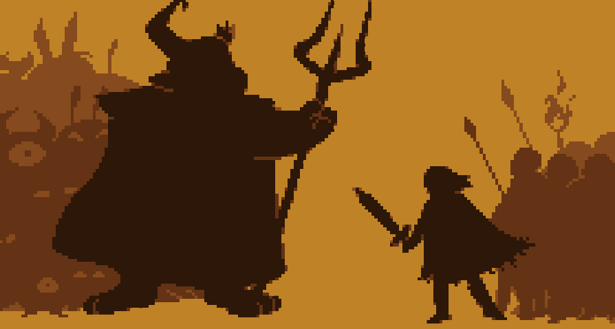
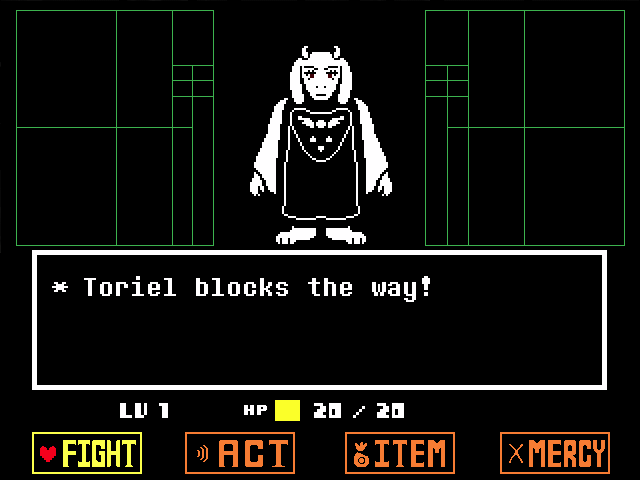

Сюжет
Сюжет игры рассказывает о том, что когда-то давно Землёй правили две расы: люди и монстры. Но однажды между ними вспыхнула война, победу в которой одержали люди. Семь величайших человеческих магов заперли монстров под землёй с помощью мощного заклятия — барьера. Единственным входом в Подземелье является небольшое отверстие в горе Эботт.

Через много лет после окончания войны в это отверстие падает человеческое дитя, которым и управляет игрок. Там он встречает Флауи, персонажа-цветка, который объясняет герою основные игровые механики и предлагает повышать LV или же LOVE, зарабатывая EXP, убивая монстров. Когда Флауи пытается убить дитя и забрать его ДУШУ, героя спасает Ториэль, монстр, представляющийся хранительницей Руин. Она обучает протагониста справляться с головоломками и разрешать конфликты с врагами мирным путём. Она обращается с протагонистом с материнской любовью и желает защитить его от Азгора Дримурра — короля монстров. Главная задача протагониста — исследовать мир монстров, познакомиться с его обитателями и в конце концов найти выход из Подземелья.

Протагонист покидает Ториэль в поисках замка Азгора, в котором находится выход на Поверхность. По ходу своего приключения дитя встречает разных монстров, самые значимые из которых — Санс и Папирус — братья-часовые леса Сноудина, Андайн — глава Королевской стражи, Альфис — королевская учёная и Меттатон — робот-телеведущий, созданный Альфис. С некоторыми из вышеописанных персонажей протагонисту приходится вступить в бой. Игрок может выбрать, убить их или проявить милосердие. В последнем случае герой может подружиться с ними. По мере прохождения, протагонист постепенно узнаёт о причинах вспыхнувшей войны между монстрами и людьми и что, как оказалось, до него в Подземелье уже падали другие люди. Азриэль, сын Азгора и Ториэль, подружился с первым упавшим человеком, которого приняли в семью Дримурров. Однако ребёнок покончил жизнь самоубийством, съев ядовитые цветы, чтобы Азриэль поглотил его ДУШУ и смог пройти через барьер. Когда Азриэль достиг деревни человека, жители в ярости напали на него и смертельно ранили. Король Азгор решил покончить со страданиями монстров — он отдал приказ убивать и забирать ДУШИ каждого человека, падающего в Подземелье, чтобы уничтожить барьер и отомстить людям. Для этого ему нужно собрать семь человеческих ДУШ, и для завершения плана ему не хватает одной ДУШИ — души главного героя. Дальнейшее развитие событий зависит от того, какие решения принимал игрок при столкновении с монстрами.